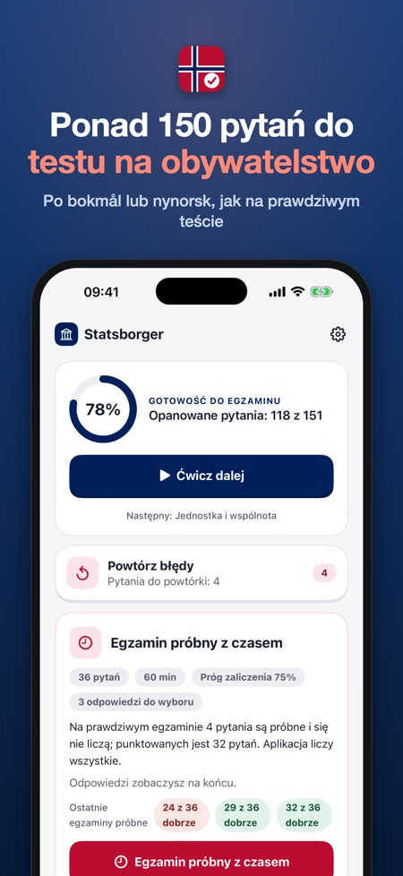
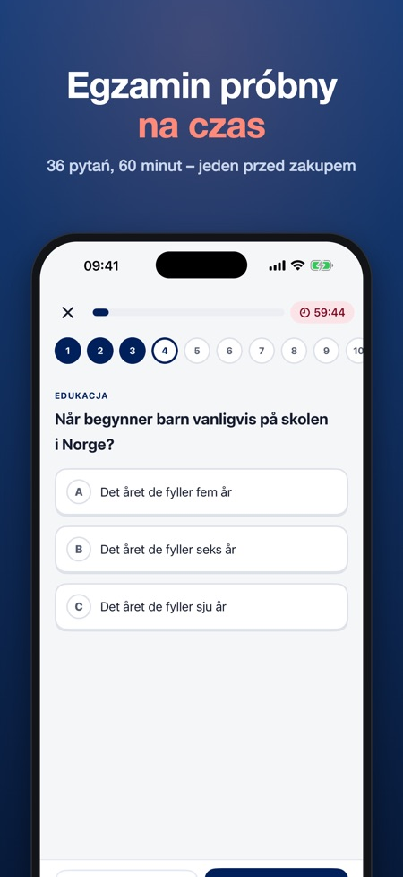
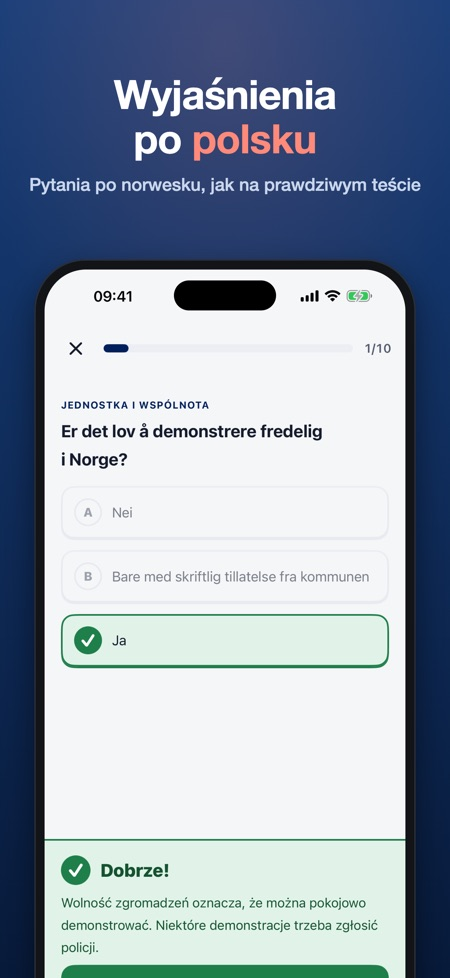

Statsborgerprøven po polsku. 150+ pytań po norwesku z wyjaśnieniami po polsku. Egzamin próbny z czasem: 36 pytań w 60 minut, jak na prawdziwym teście.



Płacisz raz, bez subskrypcji. Przygotuj się do norweskiego testu na obywatelstwo (statsborgerprøven) z 150+ pytaniami i wyjaśnieniami.
PYTANIA PO NORWESKU, WYJAŚNIENIA PO POLSKU
Tak jak na prawdziwym teście, wszystkie pytania są po norwesku (bokmål lub nynorsk). Po każdej odpowiedzi przeczytasz po polsku (albo po norwesku, angielsku, niemiecku lub arabsku), dlaczego jest dobra lub zła. Uczysz się jednocześnie języka i faktów.
CO ZAWIERA APLIKACJA
• 150+ pytań prostym norweskim na 8 tematów wiedzy o społeczeństwie: historia i geografia, demokracja i państwo opiekuńcze, jednostka i wspólnota, przyjazd do Norwegii, praca, edukacja, rodzina i dorastanie oraz zdrowie
• Egzamin próbny z czasem w oficjalnym formacie: 36 pytań w 60 minut, zaliczenie od 75%
• Błędy wracają, dopóki nie odpowiesz dobrze 2 razy z rzędu
• Postępy w każdym temacie
UCZCIWA CENA
Temat historia i geografia oraz jeden pełny egzamin próbny wypróbujesz bez zakupu. Odblokuj wszystko jednym zakupem. Bez subskrypcji, bez reklam, bez konta. Zakupem podzielisz się z rodziną przez Chmurę rodzinną. Działa offline.
Aplikacja jest niezależna i niepowiązana z HK-dir, UDI ani państwem norweskim. Wszystkie pytania napisaliśmy sami na podstawie publicznych tematów programu. Egzamin próbny służy do ćwiczeń; prawdziwy test może się różnić.